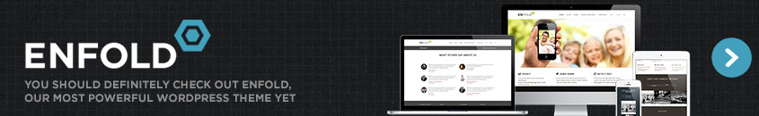

The Complete Guide to Updating Enfold
Updating WordPress Themes is easy, but if you are new to themeforest and/or WordPress here is a guide to help you
In 2015, quickly putting together a professional looking WordPress site that displays perfectly across all devices has never been easier. The days of needing a team of eye-wateringly expensive external developers to fine-tune your site for weeks – if not months – are now thankfully in the past.
Here at Kriesi we’re proud to have played our part in this by releasing a suite of easily configurable, fully responsive themes, chief among them our flagship product Enfold. But one major paint point we’ve seen come up repeatedly – particularly for less experienced WordPress users – is the subject of updating.
Enfold ships with a lifetime guarantee of free updates, and in this article we’ll walk through everything you need to know to update safely and with confidence for many years to come.
Let’s begin with a quick look at the major versions of the theme to date for some context.
Enfold Versions to Date
Enfold has been on offer since April 2013 and we’ve been through three milestone versions and a host of minor releases in that time:
- Enfold 1.0: Enfold’s debut appearance back in April of 2013.
- Enfold 2.0: The addition of update options direct from the WordPress backend was the standout feature of this August 2013 release.
- Enfold 3.0: A major upgrade of the theme in October 2014 that included demo installs, speed improvements and host of new functionality.
The version at the time of writing is Enfold 3.1. One of the main reasons we’re mentioning the previous iterations at the top of this article is to draw your attention to a useful file that ships with every version of Enfold: version.txt.
If you pop open the main Enfold download folder you should see version.txt sitting at the top level.

Open the file in a text editor and you’ll see a complete changelog stretching all the way back to version 1.0.
The details of historic versions will probably be of little interest to anyone other than developers, but reviewing this file is an excellent way of getting a comprehensive, no-fluff overview of all changes prior to installing a new version.
Before we go any further, let’s discuss the essential preparatory step to take first to ensure your update process is hassle-free and non-destructive: using child themes.
What Child Themes Are (And Why You Should Use Them)
One of the main causes of anxiety when updating a theme is the prospect of losing any customizations you’ve previously made to your site.
Responsible theme developers go to great pains to make sure their updates are as unobtrusive as possible, but there is also an onus on you as the site owner to play your part by following best practices for making theme-level modifications.
The recommended technique for modifying your theme in WordPress is via the use of a child theme. This is simply a separate theme that inherits the parent theme’s functionality and gives you an encapsulated space to store your own modifications.
The WordPress Codex provides an excellent overview for those new to this topic, including a comprehensive section on how to create a child theme.
We’ve also provided a dedicated section in our online documentation on Using a Child Theme in Enfold that includes a video overview of the process and a download link for a pre-built Enfold child theme to get you started:
We highly recommend going down the child theme route from the beginning, as it’s the best way to ensure that any changes you make to your Enfold install will be seamlessly maintained across updates. It also offers several additional advantages in terms of overall code modularity and organization.
Realistically however, not everybody will have pursued this path from the outset. You may have been entirely unaware of the child theme option or inherited a project from somebody who neglected to use one.
In that case, your first course of action before updating should be to make an inventory of previous changes made to the parent theme and port them over to a child theme for testing. WP Beginner have a solid overview of steps to take in order to do this if you are looking for a procedure to follow.
Always Back Up Your Current Work Before Updating
With the caveats about use of child themes out of the way, the next major point to bear in mind before we actually update anything is the importance of backing up your existing work before going any further.
On the off chance that something goes wrong, you want the security of knowing you have a complete copy of the last working state of your system – WordPress files and database – prior to the change.
Depending on the peculiarities of your setup, there are any number of ways of actually going about this but for those attempting a manual backup for the first time, plugins such as BackUpWordPress and BackupBuddy can be a great help.
The WordPress Codex also has a useful overview of the subject and WPBeginner recently put together a great breakdown of backup options aimed at beginners.
Whichever option you plump for in the end, make sure adequate backups are in place before you attempt any actual updates.
This applies equally to the case of updating WordPress itself, or any plugins you are using. Ideally you also want these updated prior to tackling your theme.
How to Update Enfold via the WordPress Backend
So far we’ve covered the most important precautionary steps to take prior to updating. It’s now time to move on to the actual update process.
The first option for installing the latest version of Enfold is to do so via the backend of WordPress – an option available in Enfold since version 2.0.
We’ve put together a dedicated page on our documentation site covering how to do this in detail, so we’ll just hit the highlights here.
Begin by entering your Themeforest user name and API key in the Enfold Theme Options panel. You can find your API key at Themeforest by navigating to My Settings > API keys.

This establishes a link between your WordPress install and Themeforest that gets WordPress to check for available updates every twelve hours.
If an update is available, you will be prompted to install directly from the Enfold Theme Options screen with a simple click.
How to Update Enfold via FTP
The second option for updating Enfold is to do it manually via FTP. There are two basic reasons why you might want to choose this option:
- You’ve hit a problem with the backend solution.
- You need fine-grained control over exactly what gets overwritten on the server.
If you’re new to the world of FTP, you’ll need to get your hands on an FTP client to use before going any further.
Filezilla is a reliable, popular and free cross-platform choice. WinSCP has long been a favorite for Windows users, and many Mac users swear by solutions such as Cyberduck and Transmit.
We’ve put together a video guide to walk you through updating via FTP:
The video outlines an easy to follow, five-step process:
- Download the latest version of Enfold from your Themeforest account.
- Check the details of the new version in the file version.txt we mentioned at the top of the article. This will detail which files have been changed.
- Unzip the enfold.zip file locally so you have access to the update files for uploading.
- Connect to your site via FTP and navigate to the location of your Enfold install in /wp-content/themes.
- Replace the contents of your live theme folder with the updated version.
The video also outlines strategies for dealing with situations where you have initial customizations outside a child theme that you wish to preserve.
Further Resources
The information above should be enough to get you safely through the majority of updates but – computers and software being what they are – there will be times you’ll need some extra information or assistance regardless of your level of expertise.
Your first port of call should be the Enfold documentation itself. We’re constantly striving to make this resource as comprehensive as possible and if there’s an answer you can’t find in there, we encourage you to contact us about it – your feedback is a vital part of making the documentation better for every user.
Enfold, like all other Kriesi themes, also comes with a guarantee of lifelong customer support. Take advantage of this when you are struggling and feel free to contact us with any questions or comments via the Enfold support forum.
For each release, there will generally be a dedicated thread covering common update issues that is actively monitored by Kriesi staff – in addition to individual posts regarding update problems. We do our best to respond as quickly as possible to every thread on the support forum.
WordPress itself is a constantly evolving platform so it’s also obviously worth investing some time in keeping up to speed on the application itself.
Newer WordPress users should take the time to review the WordPress Codex as many common questions are dealt with there in depth. Of particular note is the WordPress Lessons section within the online documentation that offers an excellently organized learning path to follow.
There are also a number of excellent resources for deepening your WordPress knowledge available for free at sites such as WPMU DEV and Hongkiat along with paid courses from platforms such as Lynda.
Conclusion
We hope this article has taken some of the fear out of updating your copy of Enfold. Let’s briefly recap the steps we covered:
- Get familiar with what has changed in the latest update by reviewing the contents of version.txt.
- Try to make sure you’re using a child theme if at all possible.
- Make sure WordPress and your plugins are up to date and that you have a full backup of your system in place.
- Either run through the backend install option to update or proceed manually via FTP if you need more control.
- Check the documentation and don’t be afraid to contact support if you run into any difficulties along the way.
Please let us know if you think we’ve missed out on any common issues that trip up Enfold users, or if you have any suggestions for making the update process easier in future releases in the comments below.
We look forward to hearing from you!



Kann sich bitte jemand drum kümmern, dass auf ThemeForest die aktuelle version von Enfold zum download bereitgehalten wird.
Derzeit ist dort nur version 3.2 / 02-06-2015 zu finden.
Und nicht 3.2.2
danke & liebe grüße
Esther